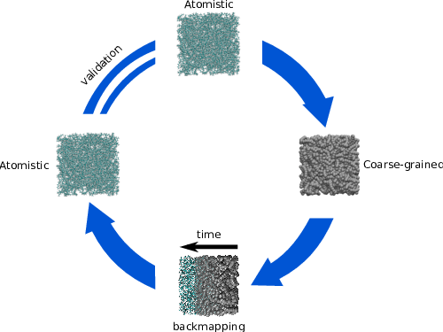

Documentation of bakery¶
Baker is a general purpose reverse mapping tool that allows to transform your coarse-grained coordinate file to atomistic representation.
Please cite this, if you used presented here reverse mapping method
Generic Adaptive Resolution Method for Reverse Mapping of Polymers from Coarse-Grained to Atomistic Descriptions Jakub Krajniak, Sudharsan Pandiyan, Eric Nies, and Giovanni Samaey Journal of Chemical Theory and Computation 2016 12 (11), 5549-5562 DOI: 10.1021/acs.jctc.6b00595 (bibtex)